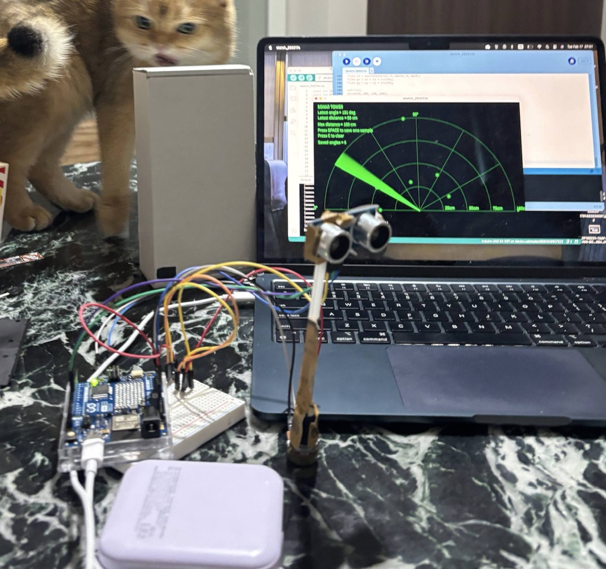
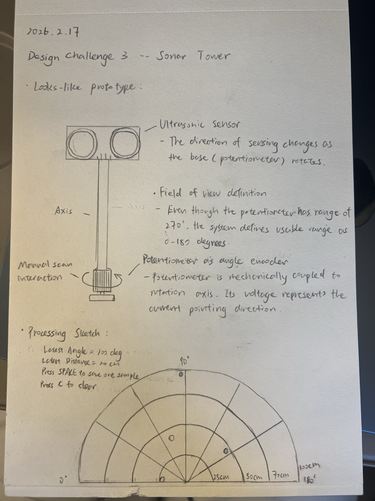
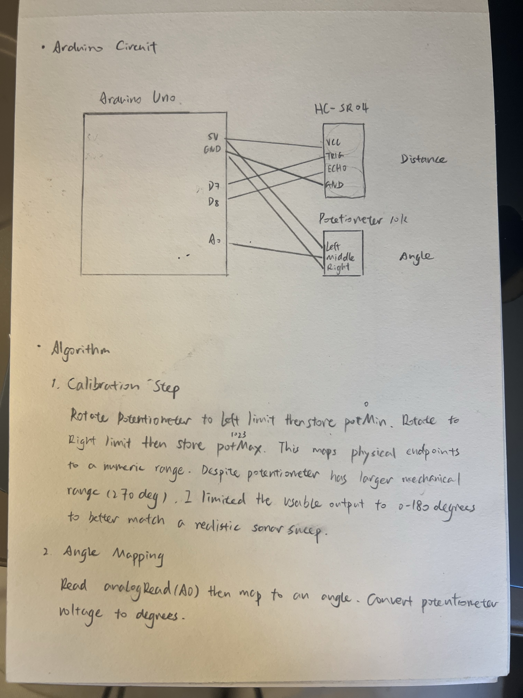

February 2026
Ultrasonic Sonar Tower
A Hand-Scanned Polar Distance Mapper
Overview
A sonar tower that maps distances across a 0–180° field of view. An ultrasonic sensor sits on a rotating axis, and a potentiometer coupled to that axis works as an angle encoder. Each angle is paired with a distance measurement and drawn as a polar radar display.
With no servo motor available, I chose a hand-turned design, so the potentiometer serves as the angle encoder

Parts list
- Arduino Uno
- Reads the sensors and sends angle and distance data to Processing.
- HC-SR04 ultrasonic sensor
- Measures the distance to objects.
- Potentiometer
- Angle encoder: its voltage tells the pointing direction of the tower.
- Plastic Straw
- Main body of the tower’s rotating axis
Modeling
The tower is built from a plastic straw. The potentiometer and sensor are fixed to the axis with tape and glue.

Physical design (Looks-like prototype)
HC-SR04 ultrasonic sensor mounted on a vertical axis. Its pointing direction changes as the base rotates.
Manual scan interaction: the user turns the base by hand, one step at a time.
Potentiometer as angle encoder: it is mechanically coupled to the rotation axis, so its voltage represents the current pointing direction.
Field of view: the potentiometer has a 270° mechanical range, but the system defines the usable range as 0–180° to match a realistic sonar sweep.
Electronics (Works-like prototype)
Arduino Uno. HC-SR04: VCC and GND, TRIG to D7, ECHO to D8. 10 kΩ potentiometer: outer pins to 5V and GND, wiper to A0.
Algorithm
Calibration: rotate to the left limit and store potMin, then to the right limit and store potMax. This maps the physical endpoints to a numeric range (0–1023).
Angle mapping: read analogRead(A0) and map it to 0–180°.
Sampling control: in Processing, pressing SPACE saves one (angle, distance) sample, which matches the idea of scanning step by step. Pressing C clears all samples.
Polar visualization: Processing converts polar data to screen coordinates. Angle sets direction and distance sets radius. Points are drawn on a semicircle radar with range rings at 25, 50, 75 and 100 cm, and a heads-up display shows the latest angle and distance.

Reflection
The key constraint was the lack of a servo motor. Using a potentiometer to measure angular position by hand still gave a functional polar scan.
The project connects to embodied cognition and perception: the potentiometer does not “know” the angle by itself. The angle emerges through mapping and calibration.